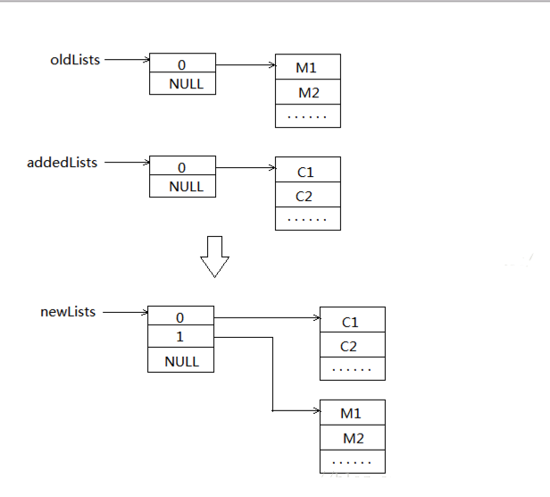

1.前言
category是Objective-C 2.0之后添加的语言特性，
category的主要作用是为已经存在的类添加方法。
2.设计思想
Objective-C 中的 Category 就是对装饰模式的一种具体实现。它的主要作用是在不改变原有类的前提下，动态地给这个类添加一些方法。
在 Objective-C 中的具体体现为：实例（类）方法、属性和协议。
1.给现有的类添加方法；
2.将一个类的实现拆分成多个独立的源文件;
好处:
a)可以减少单个文件的体积
b)可以把不同的功能组织到不同的category里
c)可以由多个开发者共同完成一个类
d)可以按需加载想要的category 等等。
3.声明私有的方法。
1.我们不主动引入 Category 的头文件，Category 中的方法都会被添加进主类中。我们可以通过 - performSelector: 等方式 对 Category 中的相应方法进行调用
a)将 Category 和它的主类（或元类）注册到哈希表中；
b)如果主类（或元类）已实现，那么重建它的方法列表。
2.在这里分了两种情况进行处理：Category 中的实例方法和属性被整合到主类中；而类方法则被整合到元类中。另外，对协议的处理比较特殊，Category 中的协议被同时整合到了主类和元类中。
3.注意到，不管是哪种情况，最终都是通过调用 staticvoid remethodizeClass(Class cls) 函数来重新整理类的数据的。
1.所有的OC类和对象，在runtime层都是用struct表示的，category也不例外，在runtime层，category用结构体category_t.
2.category结构体的定义：
struct category_t {
const char *name; //类的名字（name）
classref_t cls; //类（cls）
struct method_list_t *instanceMethods; //category中所有给类添加的实例方法的列表（instanceMethods）
struct method_list_t *classMethods; //category中所有添加的类方法的列表（classMethods）
struct protocol_list_t *protocols; //category实现的所有协议的列表（protocols）
struct property_list_t *instanceProperties; //category中添加的所有属性（instanceProperties）
};
3.从category的定义也可以看出category可以添加实例方法，类方法；可以遵守协议，添加属性；但无法添加实例变量。
注意，在category中可以有属性（property），但是该属性只是生成了getter和setter方法的声明，并没有产生对应的实现，更不会添加对应的实例变量。如果想为实例对象添加实例变量，可以尝试使用关联引用技术。
原理图: 
1.添加方法列表的时候是后添加的在新形成的列表前部，这也是为什么在有多个category中有同名方法时，后编译的在调用时会“覆盖”前面已编译的方法。其实方法本身并没有被覆盖，只是调用的时候是从上而下查找方法列表，当运行时找到对应的方法名后就去忙着调用了，并不会管后面的同名方法。
2.关于load方法：
其实在上面的源码中也可以看到,category 中对load方法的处理过并没有什么特殊。因此，可以说category 中的 load 方法跟普通方法一样也会对主类中的 load方法造成覆盖，只不过 runtime在自动调用主类和 category中的 load方法时是直接使用各自方法的指针进行调用的。所以我们感觉不到category对主类的影响。其实手动给主类发送load 消息时，调用的将会是分类中的load 方法。
1.Category 有一个非常容易误用的场景，那就是用 Category 来覆写父类或主类的方法。虽然目前 Objective-C 是允许这么做的，但是这种使用场景是非常不推荐的。
2.使用 Category 来覆写方法有很多缺点，比如不能覆写 Category 中的方法、无法调用主类中的原始实现等，且很容易造成无法预估的行为。